Prólogo
Relatos únicos
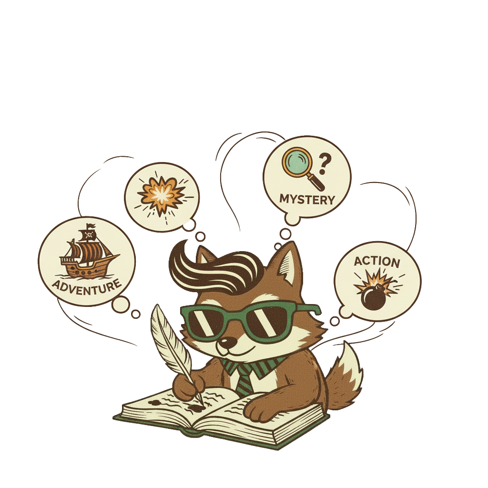
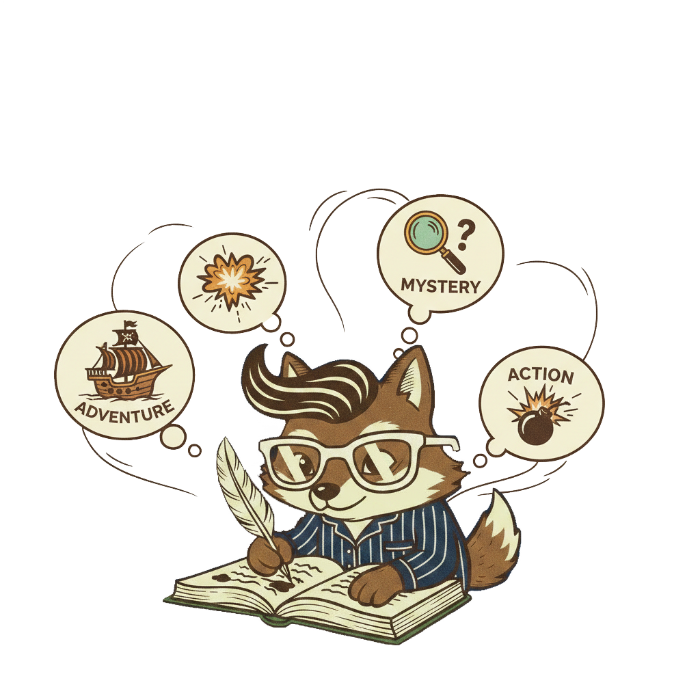
Érase una vez un lobo poco feroz que jubilado de soplar casas, decidió cambiar los colmillos por la pluma.
Buscando inspiración para sus historias se dio cuenta de algo muy importante: los niños leían historias pero nunca salían en ellas.
En ese mismo instante comenzó a idear funciones que le permitieran crear cuentos infantiles donde los niños pudieran personalizar todo su mundo.
Porque si no hay dos niños iguales… ¿por qué iban a serlo sus cuentos?
-
Aventuras
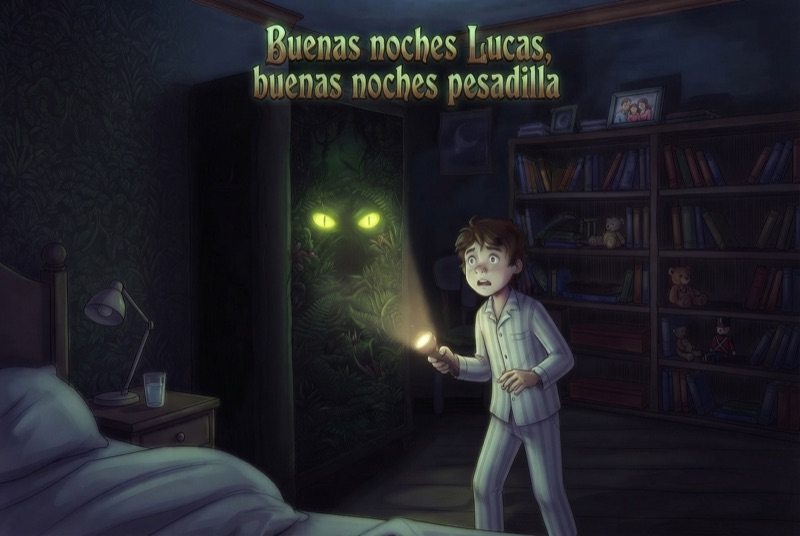
La historia en la que Lucas superó el miedo a la oscuridad
Próximamente -
Aventuras
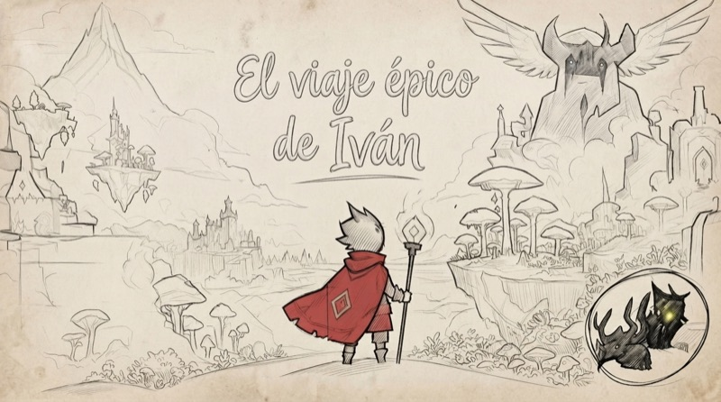
Lecturas para mentes curiosas y nuevos personajes
Próximamente Ver más cuentos
Capítulo I
Leer para comprender
-
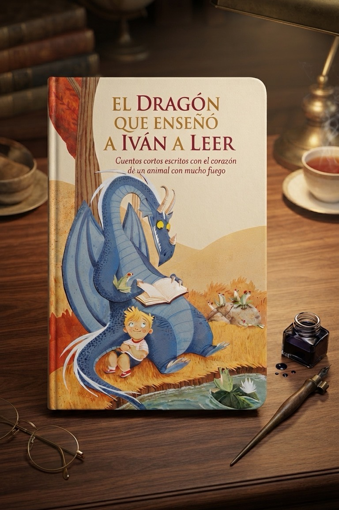
-
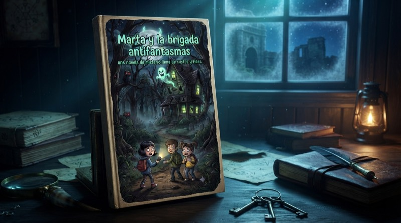
-
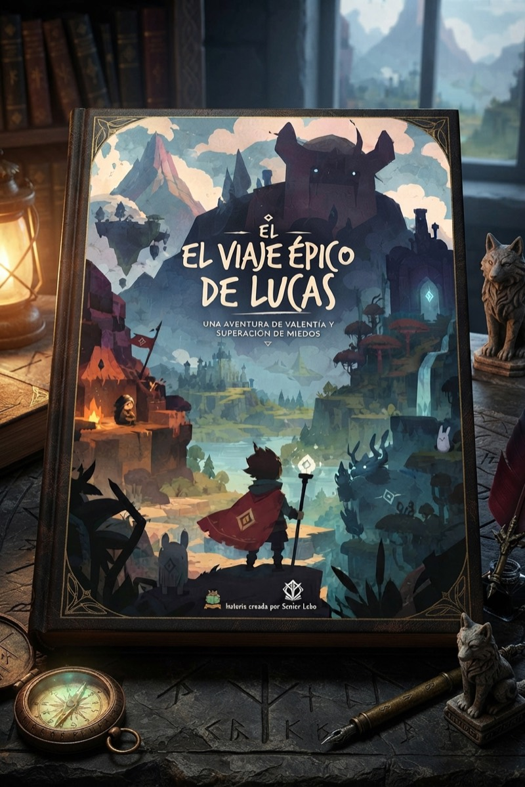
En su paseo por el reino de los cuentos Senior Lobo observó que cuando los niños se ven dentro de las historias prestan más atención al relatos.
Cuando escuchan su nombre, ven rasgos físicos similares, reconocen a gente de su entorno… ese mundo se vuelve familiar y la lectura deja de ser una obligación para convertirse en una experiencia llena de:
- Misterios que les ayuden a superar miedos tan comunes como la oscuridad o los monstruos
- Aventuras en las que aprenden a relacionarse e interactuar con nuevos personajes de su edad
- Fantasías llenas de magia que activen su imaginación y les enseñen nuevos conceptos
Capítulo II
¿Y si fuera ella?
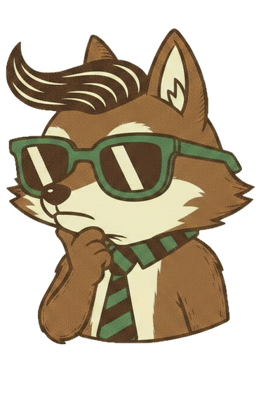
Una antológica melodía refresca la memoria de nuestro lobo que le traslada de inmediato a la biblioteca de la aldea. Allí recuerda como una pequeña se dedicaba a recopilar diariamente historias con las que sentirse identificada pero... ¿solo identificada? ¿y si fuera ella?
Senior Lobo pensó lo mucho que le gustaría a esa niña protagonizar historias en la que superase sus miedos, resolviera acertijos u otros problemas reales del día a día.
¿Por qué no darle a esa niña su propia historia?
-
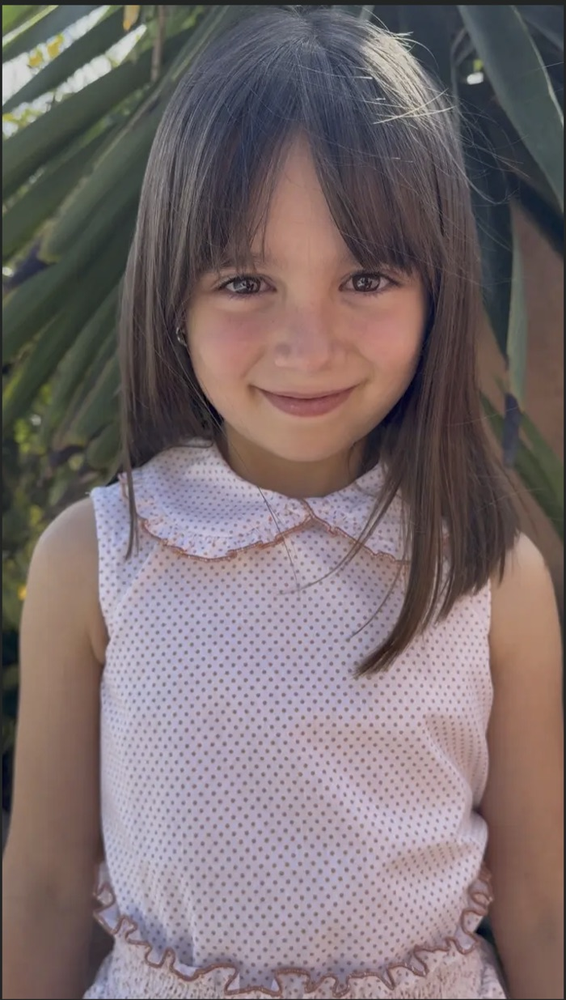
Foto real
-
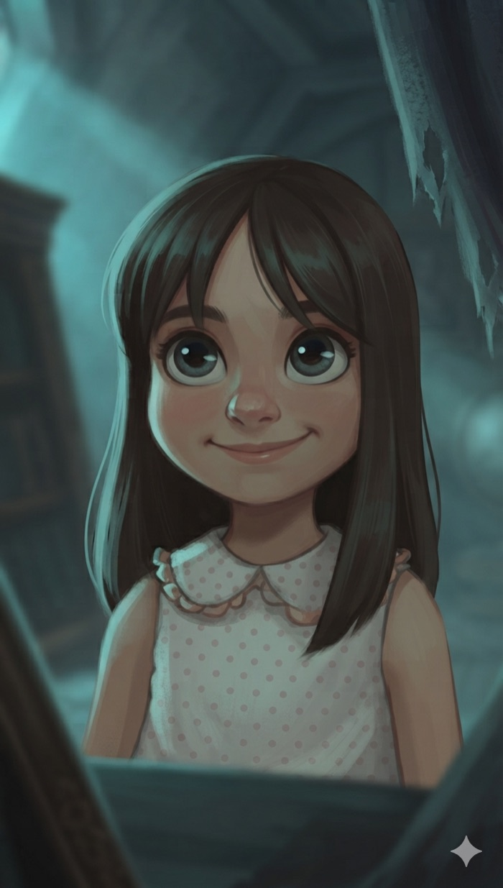
Recreación ilustrada
-
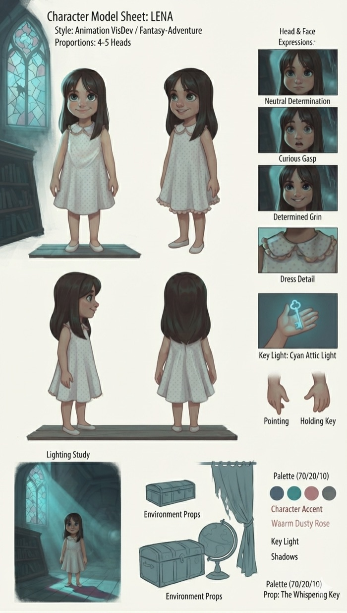
Hoja de consistencia del personaje
-
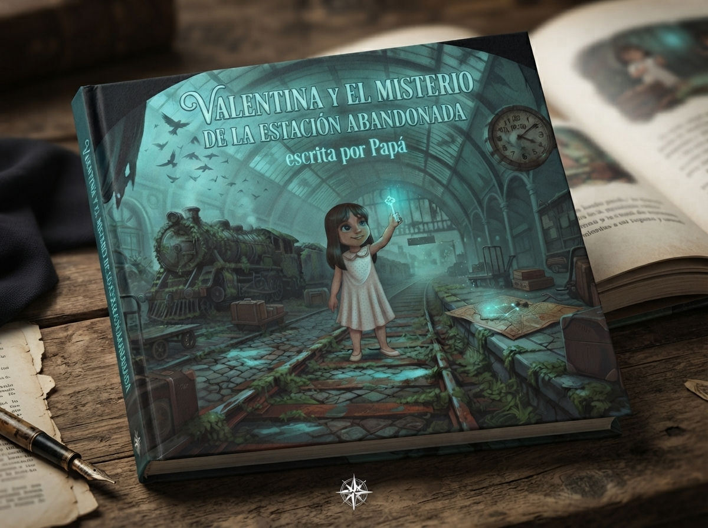
Libro personalizado
Capítulo III
Continuará…
Y colorín colorado… este cuento aún no ha acabado. Estamos trabajando a contrarreloj para que Senior Lobo termine de grabar sus mejores narraciones.
Muy pronto podrás crear el primer cuento en el que tu peque sea el protagonista. Recuerda: la siguiente página la escribiremos juntos
-
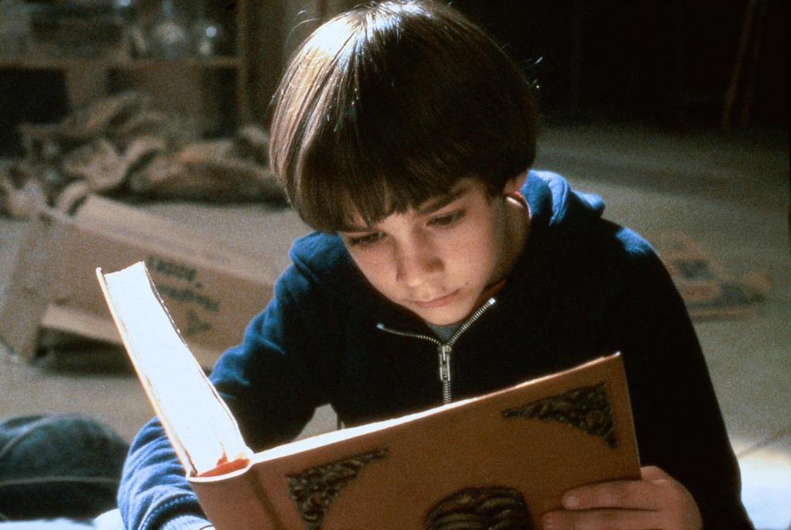
Porque las mejores historias nunca terminan